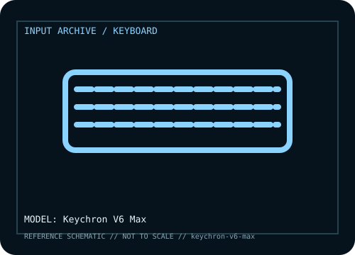

[ KEYBOARDS AND INTEGRATED POINTING DEVICES // IDENTIFIED COMPONENT ]
Keychron V6 Max
Full-size 100% customizable mechanical keyboard with QMK/VIA remapping, hot-swap support, and wired, Bluetooth, and 2.4 GHz receiver modes.

MODEL IDENTIFICATION: V6 Max; ANSI/ISO and barebone / fully assembled SKUs vary. Verify the bottom label, regional SKU, receiver, and revision against the sources before repair or compatibility claims.
Model specifications
| Catalog subcategory | Keyboards and integrated pointing devices |
|---|---|
| Form factor / layout | Full-size 100% layout with dedicated numeric keypad and navigation cluster. ANSI and ISO variants differ in physical key positions and firmware layout. |
| Key mechanism / controls | Hot-swappable mechanical-switch PCB on supported assembled/barebone variants; stock switches and keycaps depend on SKU. QMK-based firmware supports extensive remapping, subject to the loaded layout and compatible VIA configuration. |
| Wired protocol | USB-C wired keyboard mode using the data-capable cable; standard USB keyboard input is available. USB-C connection is also used for charging on wireless SKUs. |
| Wireless protocol | 2.4 GHz receiver mode and Bluetooth 5.1 multi-host mode are available in addition to wired USB-C; switch the physical mode selector to the intended connection. |
| Host compatibility | USB HID typing works on compatible Windows, macOS, and Linux hosts. Bluetooth requires a host with compatible Bluetooth HID support. Key mapping tools, firmware flashing, and VIA configuration are software/firmware dependent; verify ANSI/ISO and barebone variant before loading files. |
| Configuration / software | QMK and VIA support layers, macros, and key remapping. Preserve the exact firmware/configuration and use Keychron’s V6 Max-specific guide rather than files for V6, V6 Pro, or another V-series board. |
| Revision / service caveat | V6 Max is not the original V6 or V6 Pro. Wireless receiver, battery, PCB, and firmware behavior are revision/SKU specific; do not use unrelated model firmware. |
Preservation and service notes
Record the unit label, keyboard layout, switch option, cable or matched receiver, host OS, and test mode before troubleshooting. For wireless models, distinguish Bluetooth pairing from proprietary receiver operation; for wired models, verify that the USB connection carries data rather than power only.
Keep saved layouts and firmware with the exact model/revision. Disconnect power before switch or keycap service, use manufacturer-safe cleaning methods, and do not infer a unit’s configuration from a broad product-family name.
Manufacturer and independent references
- Keychron — V6 Max product pagePrimary manufacturer product reference for identifying this model and its stated feature set.
- Keychron — V6 Max user guideAdditional manufacturer documentation or independent model-specific testing; consult the revision/region applicable to the physical unit.
Product pages and support resources can change. Preserve the applicable manual or page revision when documenting a particular keyboard.